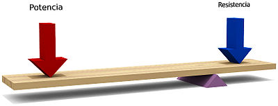
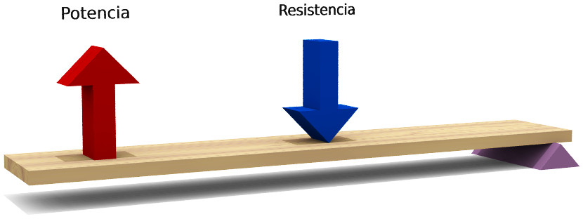
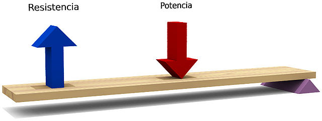
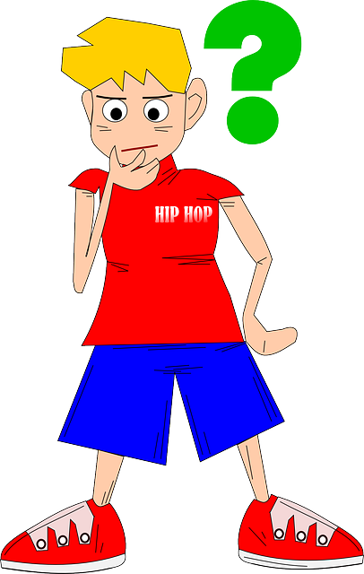
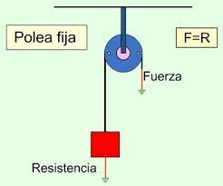
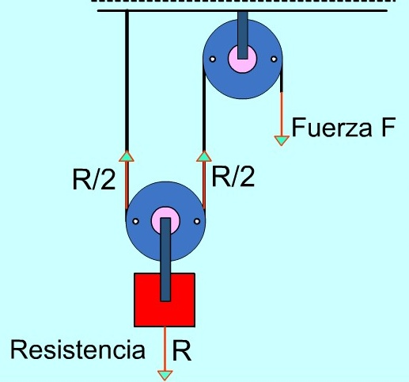

la potencia se encuentra entre la resistencia y el fulcro.
Mecanismos de transmisión lineal. Las palancas
1. Palancas
Una palanca consiste en un elemento rígido, semejante a una barra, que gira alrededor de un punto, llamado punto de apoyo o fulcro, sobre el que actúan varias fuerzas en equilibrio. Cada fuerza produce un momento de giro en la palanca. El momento es el producto de la fuerza por su distancia al punto de giro.
Existen tres tipos de palanca según se encuentren la F, R y punto de apoyo.
- Palanca de primer grado: el punto de apoyo se encuentra entre la fuerza aplicada (potencia) y resistencia.
- Palanca de segundo grado: la resistencia se encuentra entre la potencia y el punto de apoyo.
- Palanca de tercer grado: la potencia se encuentra entre la resistencia y el punto de apoyo.
|
Palanca de primer grado. Wikimedia Commons (CC BY-SA) |
 |
 |
Pero......

¿Cómo funcionan las palancas?
Visualiza este vídeo para saber cómo funcionan las palancas e identificar los elementos.
Ley de la palanca
La expresión general que relaciona las distancias que existen del punto de aplicación de las fuerzas al punto de apoyo o fulcro es la siguiente:
La ley de la palanca
Las palancas se comportan siguiendo la ley física conocida como Ley de la palanca, que se expresa matemáticamente por la expresión que dice:
La palanca estará en equilibrio cuando
- el producto de la fuerza aplicada por su distancia al punto de apoyo
- es igual al producto de la fuerza resistencia por su distancia al punto de apoyo.
Aplicable a cualquier tipo de palanca, 1º, 2º o 3º grado.
¡¡Seguimos aprendiendo!!
Mecanismos de transmisión lineal. Las poleas
La polea
Es una rueda ranurada que gira alrededor de un eje que se halla sujeto a una superficie fija. Por la ranura de la polea se hace pasar una cuerda, cadena o correa que permite vencer, de forma cómoda, una resistencia R aplicando una fuerza F.

Pulsa en la imagen para ver un vídeo explicativo:

Ánimo, ¡¡seguimos aprendiendo!!
El punto de apoyo suele denominarse ''Fulcro''
{kind=link}
{kind=link}